Гайки
85 типов изделий в категории.
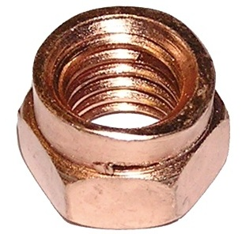
ART 88105 гайка самостопорящаяся омедненная THERMAG

DIN 1479 Гайка-муфта
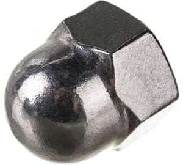
DIN 1587 Гайка колпачковая

DIN 1804 Гайка шлицевая

DIN 2510 Гайка для фланцевых соединений
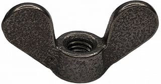
DIN 315 Гайка-барашек с округлыми лепестками

DIN 315 Гайка-барашек с прямоугольными лепестками
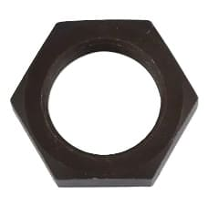
DIN 431 Гайка трубная

DIN 439 / ISO 4035 Гайка низкая шестигранная

DIN 439 LH Гайка низкая с левой резьбой

DIN 439-2 / ISO 8675 Гайка низкая с мелкой резьбой

DIN 466 Гайка с накаткой круглая высокая
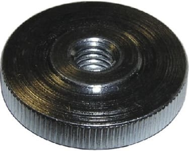
DIN 467 Гайка с накаткой низкая круглая
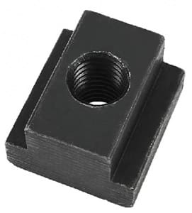
DIN 508 Гайка для Т-образных пазов
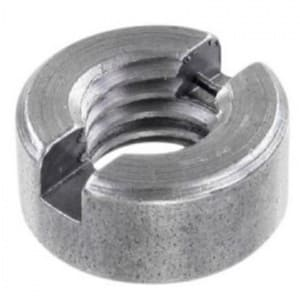
DIN 546 Гайка шлицевая круглая
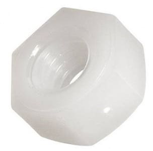
DIN 555 Гайка шестигранная

DIN 557 Гайка квадратная с фаской
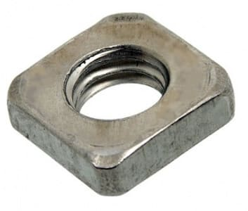
DIN 562 Гайка квадратная низкая

DIN 582 рым-гайка

DIN 6303 Гайка с накаткой
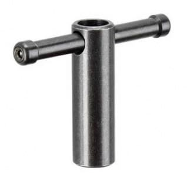
DIN 6307 Гайка зажимная воротковая

DIN 6330 Гайка высокая

DIN 6331 Гайка с фланцем
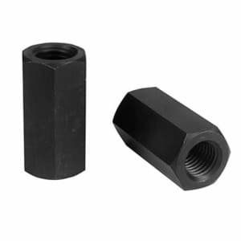
DIN 6334 Гайка соединительная

DIN 6335 ручка крестообразная

DIN 6915 Гайка высокопрочная
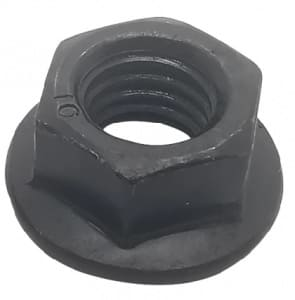
DIN 6923 Гайка с фланцем
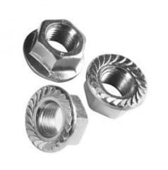
DIN 6923 Гайка с фланцем с насечкой

DIN 6924 Гайка самоконтрящаяся

DIN 6925 Гайка самоконтрящаяся
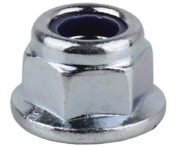
DIN 6926 Гайка самоконтрящаяся с фланцем
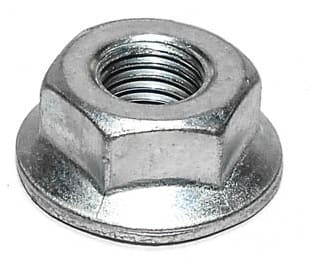
DIN 6927 Гайка самоконтрящаяся с фланцем
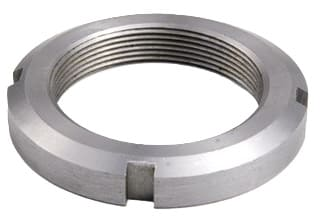
DIN 70852 Гайка шлицевая

DIN 74361 Гайка с плоским фланцем

DIN 7967 Гайка стопорная
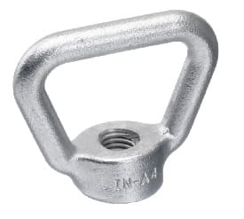
DIN 80704 гайка-барашек
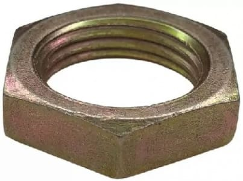
DIN 80705 гайка плоская

DIN 917 Гайка колпачковая
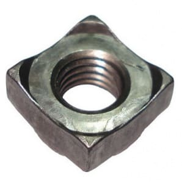
DIN 928 Гайка приварная квадратная

DIN 929 Гайка приварная шестигранная

DIN 934 LH гайка с левой резьбой
DIN 934 Гайка с мелким шагом резьбы
DIN 934 Гайка шестигранная с крупной резьбой
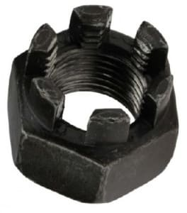
DIN 935 Гайка корончатая

DIN 936 Гайка низкая шестигранная

DIN 937 Гайка корончатая низкая

DIN 979 Гайка корончатая низкая

DIN 980 Гайка самоконтрящаяся цельнометаллическая
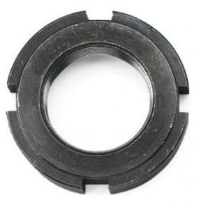
DIN 981 Гайка шлицевая

DIN 982 Гайка самоконтрящаяся высокая
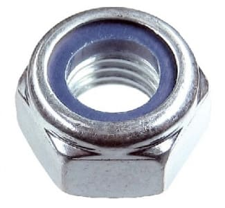
DIN 985 Гайка самоконтрящаяся низкая
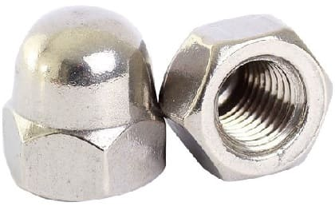
DIN 986 Гайка колпачковая самоконтрящаяся

ISO 10511 Гайка самоконтрящаяся низкая
ISO 10512 Гайка самоконтрящаяся
ISO 4032 Гайка шестигранная

ISO 4033 Гайка высокопрочная

ISO 7042 Гайка самостопорящаяся
ISO 8673 Гайка с мелкой резьбой

ISO 8675 Гайка низкая
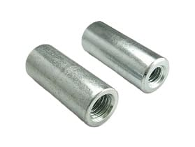
Втулка круглая ART 88088

Втулка приварная резьбовая
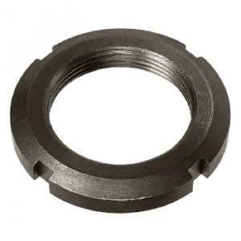
ГОСТ 11871-88 Гайка шлицевая круглая

ГОСТ 3032-76 Гайка-барашек
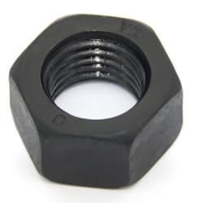
ГОСТ 5915-70 гайка шестигранная

ГОСТ 5918-73 Гайка корончатая

ГОСТ 5927-70 гайка шестигранная

ГОСТ 9064-75 Гайка для фланцевых соединений
ГОСТ ИСО 4032-2014 Гайка шестигранная
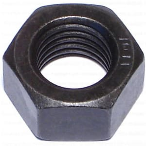
ГОСТ Р 52645-2006 Гайка высокопрочная
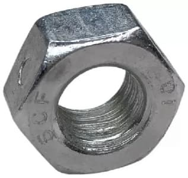
Гайка Bilok ART 84032
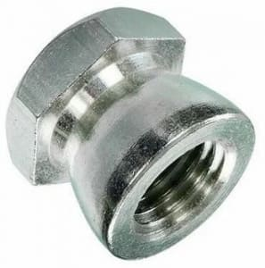
Гайка антивандальная отрывная ART 88118
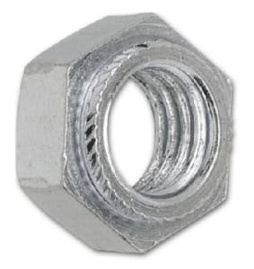
Гайка запрессовочная ART 88106

Гайка запрессовочная круглая
Гайка запрессовочная шестигранная

Гайка кузовная закладная
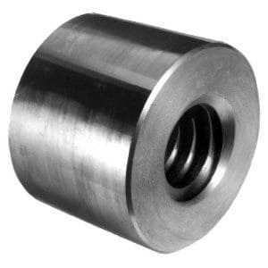
Гайка с трапецеидальной резьбой ART 88089
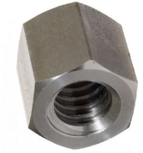
Гайка с трапецеидальной резьбой ART 88090
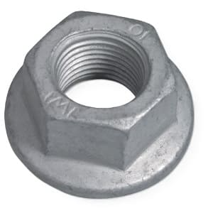
Гайка с фланцем ART 13023

Гайка с фланцем и рифлением ART 88914

Гайка соединительная ART 88087

Гайка стопорная с буртом ART 88934

Гайка шлицевая ART 88081
Гайки с фланцем DIN 6923 и ГОСТ Р 50592-93
Сравнение стандартов на гайки DIN 982 и DIN 985